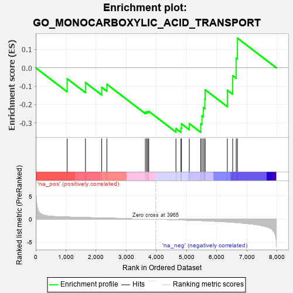
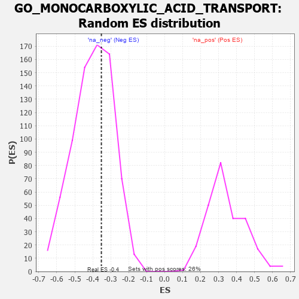

| | | Dataset | 7d |
| Phenotype | NoPhenotypeAvailable |
| Upregulated in class | na_neg |
| GeneSet | GO_MONOCARBOXYLIC_ACID_TRANSPORT |
| Enrichment Score (ES) | -0.3520247 |
| Normalized Enrichment Score (NES) | -0.88130844 |
| Nominal p-value | 0.6487214 |
| FDR q-value | 0.96109766 |
| FWER p-Value | 1.0 |
Table: GSEA Results Summary

Fig 1: Enrichment plot: GO_MONOCARBOXYLIC_ACID_TRANSPORT
Profile of the Running ES Score & Positions of GeneSet Members on the Rank Ordered List
| PROBE | GENE SYMBOL | GENE_TITLE | RANK IN GENE LIST | RANK METRIC SCORE | RUNNING ES | CORE ENRICHMENT | | 1 | AKT1 | | | 1040 | 0.476 | -0.0592 | No |
| 2 | RXRA | | | 1647 | 0.365 | -0.0804 | No |
| 3 | SYK | | | 2186 | 0.278 | -0.1062 | No |
| 4 | MIF | | | 2357 | 0.252 | -0.0897 | No |
| 5 | ACSL4 | | | 3632 | 0.055 | -0.2416 | No |
| 6 | ABCD1 | | | 3677 | 0.047 | -0.2401 | No |
| 7 | NF1 | | | 3713 | 0.040 | -0.2385 | No |
| 8 | HTR1B | | | 3745 | 0.035 | -0.2371 | No |
| 9 | NMUR2 | | | 4646 | -0.127 | -0.3311 | Yes |
| 10 | P2RX4 | | | 4813 | -0.161 | -0.3278 | Yes |
| 11 | ABCD3 | | | 4829 | -0.164 | -0.3050 | Yes |
| 12 | DRD2 | | | 5088 | -0.221 | -0.3041 | Yes |
| 13 | CPT1A | | | 5467 | -0.311 | -0.3048 | Yes |
| 14 | FABP4 | | | 5509 | -0.322 | -0.2615 | Yes |
| 15 | ABCG2 | | | 5556 | -0.335 | -0.2170 | Yes |
| 16 | MPC1 | | | 5603 | -0.345 | -0.1708 | Yes |
| 17 | CPT2 | | | 5611 | -0.348 | -0.1192 | Yes |
| 18 | ABCD4 | | | 6349 | -0.597 | -0.1221 | Yes |
| 19 | ACE | | | 6526 | -0.674 | -0.0428 | Yes |
| 20 | ACSL5 | | | 6643 | -0.737 | 0.0535 | Yes |
| 21 | MPC2 | | | 6683 | -0.753 | 0.1620 | Yes |
Table: GSEA details [plain text format]

Fig 2: GO_MONOCARBOXYLIC_ACID_TRANSPORT: Random ES distribution
Gene set null distribution of ES for GO_MONOCARBOXYLIC_ACID_TRANSPORT